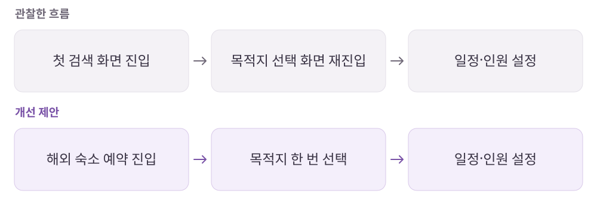
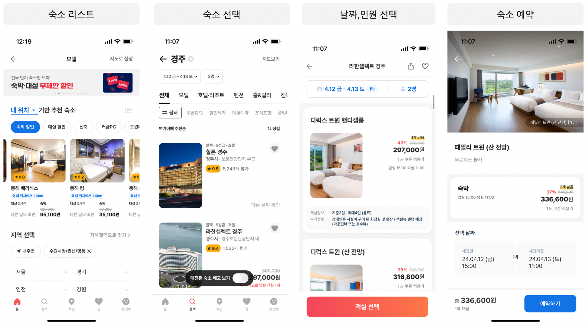
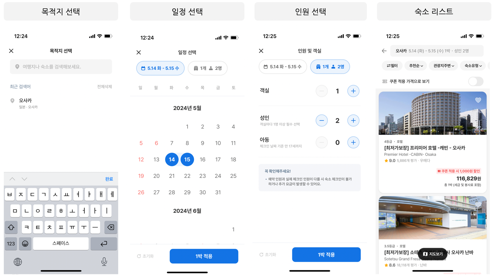
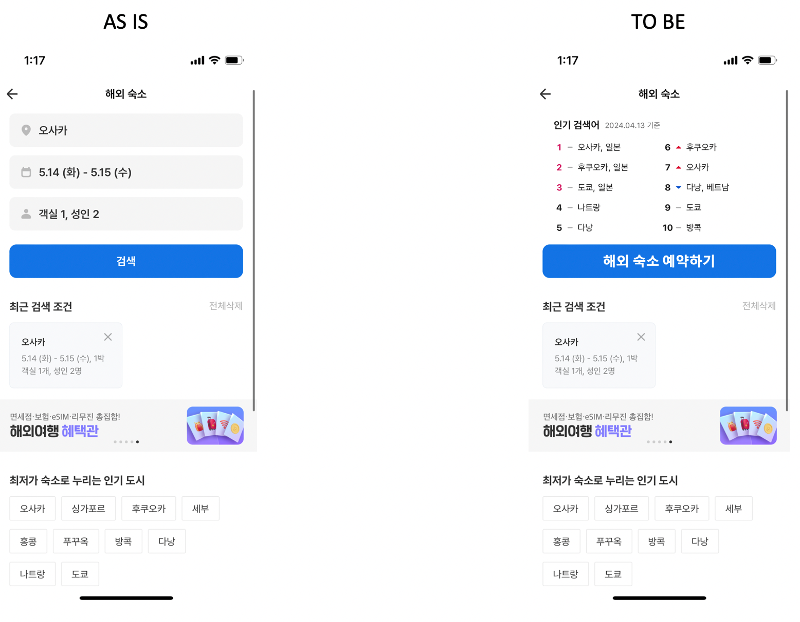

여기어때
국내·해외 숙소의 예약 순서는 왜 다르고, 중복 입력은 어떻게 줄일까?
숙소·항공·액티비티 등을 연결하는 종합 여행·여가 예약 플랫폼.
학습 목적국내·해외 숙소의 목적지·날짜·인원 입력 순서와 항공+숙소 예약 단계를 비교했습니다. 목적지 중복 입력·후기 정보·예약 확인과 취소 대응을 살피고 항공 정보 API도 추가 학습했습니다.
개인 학습 기록 · 관찰한 경험, 기획 의도에 대한 해석, 개선 제안을 구분해 정리했습니다. 수치·요금·정책은 분석 당시 조사한 자료이며 현재 기준이나 직접 만든 성과가 아닙니다.
01사용자와 해결 방향
누구를 위한 서비스인가여행에 필요한 여러 예약을 따로 비교하고 결제하는 시간을 줄이고 싶은 사용자.
Why · 사용자가 찾는 이유
여행 일정과 예산에 맞는 숙소·항공·즐길 거리를 찾고 싶지만, 여러 곳에서 가격과 조건을 비교하고 따로 예약하는 과정이 번거롭다.
What · 제공 경험과 해결 방식
국내·해외 숙소와 항공·액티비티를 탐색하고 예약하는 경험을 제공한다. 항공+숙소 결합 상품은 일정에 맞는 조합을 찾고 각각 결제하는 수고를 줄인다.
02핵심 기능과 벤치마킹
- 항공+숙소
- 분리된 상품 선택을 하나의 예약 과정으로 연결.
- 국내·해외별 탐색 순서
- 숙소 중심 탐색과 목적지·일정 중심 탐색의 차이를 반영.
- 최종 내역 확인
- 간결한 진행 과정에서 놓친 조건을 결제 전에 다시 확인.
비교해서 살펴본 지점
- 야놀자
- 해외 숙소 조건 설정, 가격 표시와 예약 흐름을 비교.
근거리 해외여행을 일상적 선택으로
숙소·항공뿐 아니라 액티비티·렌터카·맛집·모바일 티켓을 묶는 종합 여가 경험을 살폈다. 비행 1~4시간의 일본·베트남 등 근거리 목적지에 항공+숙소 특가를 집중해, 큰 연례행사였던 여행을 주말에도 선택하게 만드는 전략으로 해석했다.
국내·해외 화면과 경쟁사 비교
| 대상 | 관찰한 차이 |
|---|---|
| 국내 숙소 | 지역·지하철역, 예약 가능 여부, 설정 위치 주변 숙소 중심 |
| 해외 숙소 | 최근 검색 조건, 쿠폰 적용 가격, 관광지 주변, 전체 객실→상세 객실 |
| 야놀자 | 목록에서 조건을 한 번에 조정하고 결제 전 세금 포함 가격 확인. 당시 화면은 상대적으로 복잡하다고 평가 |
| 여기어때 | 조건을 단계별로 전환하고 자유여행·패키지 장점을 결합. 상대적으로 직관적이라고 평가 |
03사용자 흐름과 기획 의도
목적지를 두 번 고르는 동선 줄이기

관찰한 경험
- 국내 숙소와 해외 숙소의 날짜·인원·장소 선택 순서, 결합 상품의 단계 표시와 최종 확인 화면을 비교했습니다.
- 해외 숙소 첫 검색에서 목적지를 다시 선택하는 동선과 패키지 리뷰 접근의 아쉬움을 기록했습니다.
국내와 해외 예약의 입력 순서 비교
국내는 숙소 탐색 후 날짜·인원을, 해외는 목적지·일정·인원을 먼저 정하는 차이를 비교했다. 사용자가 이미 정한 조건에 맞춰 순서를 달리한 것으로 해석했다.

크게 보기 ↗
크게 보기 ↗결합 상품의 순서와 재확인
날짜 → 항공 → 숙소 → 인원 → 정보 입력 → 확인·결제로 흐름을 정리했다. 게이지는 진행 단계를, 최종 내역은 간결한 과정에서 놓칠 수 있는 항공·숙소 조건의 재확인을 담당한다고 해석했다.
왜 이렇게 설계했을까 · 나의 해석
- 같은 예약이라도 사용자가 먼저 정한 조건이 다르면 입력 순서도 달라져야 한다고 봤습니다.
- 편리하게 단계를 줄이되 결제 전에는 항공·숙소·인원 조건을 다시 확인할 수 있어야 한다고 해석했습니다.
04문제와 개선 제안
Pain Point · 걸리는 지점
- 해외 숙소 검색 진입 시 비슷한 목적지 선택 화면을 다시 거쳤다.
- 항공+숙소 결합 상품의 실제 경험을 판단할 후기 정보가 부족하다고 느꼈다.
- 원문에 수집한 반응에서는 예약 확인과 취소 대응의 불편도 나타났다.
내가 바꿔본다면
- 목적지 중복 선택을 줄이고 버튼 문구를 실제 다음 행동에 맞게 구체화.
- 항공과 숙소 이용 정보가 함께 담긴 패키지 후기로 선택 근거 보강.
- 예약 연동 상태와 고객지원 대응까지 경험의 범위로 검토.

크게 보기 ↗첫 검색 화면의 역할 정리
중복되는 세부 검색 탭 대신 인기 검색어·해외 핫플·문화생활 배너를 배치하고, 막연한 검색보다 해외 숙소 예약이라는 다음 행동을 드러내는 문구를 제안했다. 항공편·숙소 정보가 함께 보이는 이용자 리뷰로 해외 패키지의 신뢰를 보강하는 안도 포함했다.
05장점과 아쉬운 지점
좋았던 점
- 여행 상품을 한 서비스에서 연결해 따로 준비하는 수고를 줄인다.
- 국내·해외 예약의 탐색 맥락 차이를 반영한다.
아쉬운 점 · 더 살필 점
- 짧은 예약 과정과 별개로 공급자 연동·예약 확인·고객 대응의 완결성이 필요하다.
상품 구성의 이점과 예약 이후의 단절
- 장점
- 비슷한 출·귀국 시간대 조합, 여행 날짜에 맞춘 입장권, 위치·평점에 맞는 호텔, 무료 여행자보험 등 준비 비용을 줄이는 상품 구성. 한 서비스에서 여러 예약을 찾기 쉽다는 반응.
- 아쉬움
- 가는 편을 눌러야 돌아오는 편을 확인하는 구조, 패키지 숙소 리뷰 부족, 해외 숙소 검색 카테고리 접근성. 취소·변경 지연, 호텔의 예약 미확인, 예약자 외 동행인의 문의 제한 사례도 기록.
성장 자료와 후속 과제
원문에 참고한 당시 기사에서는 2022년 6월 이후 21개월 연속 신규 설치 1위, 활성화 기기 약 1,100만, 2023년 7월 해외 숙소 거래액 전년 동기 대비 약 90배 증가를 소개했다. 최저가·결합 상품의 호응과 별개로 탐색·결제·취소·가격·고객지원 전반의 완결성이 필요하다고 해석했다.
06내가 주목한 점
연동 방식에서 시작한 API 학습
국내·해외 숙소의 예약 연동 방식이 같은지, 공급자와 플랫폼 중 어디에서 확인이 지연되는지 질문했다. 항공 정보 탐색에서는 한국공항공사의 공개 API와 활용 신청 절차를 조사하고 항공사·편명·예정 및 변경 시각·출도착지·국내외 구분·탑승구 필드를 살폈다. 이는 공개 운항 정보 조사이며 여기어때의 실제 연동이나 예약 발권 API를 확인한 것은 아니다.
기획에 가져갈 기준
- 같은 ‘숙소 예약’이라도 사용자 맥락에 따라 필요한 정보의 순서가 다르다.
- 진입 문구가 다음 화면의 실제 행동을 예고하는지 확인할 것.